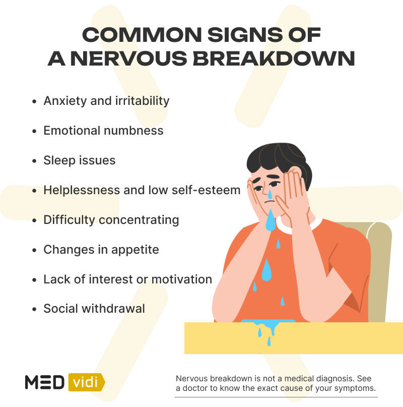
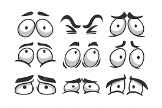

¿Qué son?
Los nervios, como emoción humana, se refieren a una sensación de ansiedad, tensión o inquietud que una persona experimenta en situaciones que percibe como desafiantes, estresantes o importantes. Esta emoción puede manifestarse físicamente a través de síntomas como sudoración, temblores, palpitaciones, sequedad en la boca y tensión muscular.
¿Qué hago si me siento nerviosx?
Respira profundamente: La respiración profunda y controlada puede ayudar a calmar los nervios. Toma respiraciones lentas y profundas, inhala durante unos segundos, retén el aire por un momento y luego exhala lentamente. Repite este proceso varias veces para reducir la tensión.
Visualiza el éxito: Cierra los ojos por un momento e imagina una situación exitosa y positiva. Visualiza cómo te sientes tranquilo, seguro y confiado mientras enfrentas la situación que te hace sentir nervioso. Esta técnica de visualización puede ayudar a cambiar tu enfoque mental.
Practica la relajación muscular: La tensión muscular es común cuando estás nervioso. Intenta tensar y luego relajar conscientemente los músculos de tu cuerpo, comenzando por los pies y avanzando hacia la cabeza. Esto puede ayudar a aliviar la tensión física.
Habla contigo mismo de manera positiva: Cambia tus pensamientos negativos por afirmaciones positivas. En lugar de preocuparte por lo que podría salir mal, repítete a ti mismo cosas como "Puedo hacerlo", "Soy capaz" y "Tengo control sobre mis nervios".
Preparación y práctica: Una de las mejores formas de combatir los nervios es estar bien preparado. Investiga y practica para la situación que te hace sentir nervioso. Cuanto más te prepares, más confianza tendrás en tu capacidad para enfrentarla.

